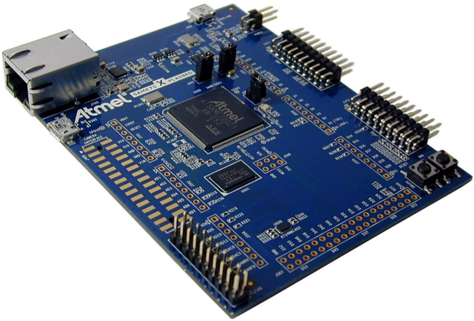
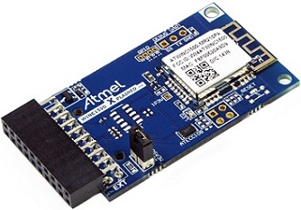
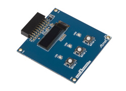

Sobre¶
Objetivos de aprendizagem¶
Ao final da disciplina o estudante será capaz de:
- Criar softwares para microcontroladores utilizando suas especificidades (periféricos/ lowpower);
- Avaliar e melhorar soluções embarcadas integrando hardware/software levando em conta adequação a uma aplicação;
- Integrar em um protótipo hardware, software básico, sistema operacional de tempo real e módulos de interfaceamento com usuários, de comunicação e de alimentação.
- Compreender as limitações de microcontroladores e seus periféricos;
- Buscar e analisar documentação (datasheet) e extrair informações relevantes.
Conteúdo Programático¶
- Sistemas embarcados microcontrolados e suas tecnologias
- Linguagem C para sistemas embarcados (firmware)
- Interface com o mundo externo (digital/analógica)
- Periféricos de microcontoladores
- Interrupção, superloop, Multitask
- Alimentação para sistemas embarcados
- Otimização energética
- Protocolos de comunicação
- Conectividade em sistemas embarcados - IoT, computação vestível, computação ubíqua.
- Sistema operacional de tempo real (RTOS)
Softwares¶
Alerta para usuários de Linux e Windows
Não funciona no VirtualBox! Deve utilizar o VMWARE como máquina virtual
Requisito de software para a disciplina¶
O AtmelStudio, IDE utilizado para programação dos microcontroladores da Atmel (usado no curso) é nativo Windows. Se for virtualizar, utilizar o VMware Player pois o VirtualBox possui problemas com o driver USB do gravador.
A seguir informações a seguir do que fazer para cada sistema operacional:
Windows 10¶
Nota
reservar 2h para instalação
Instalar os seguintes softwares no Windows:
- Sistema Operacional
- Windows 10
- Softwares :
- Atmel Studio 7 - Instalar a versão WEB
- Serial Port for AtmelStudio
- git/github
Usuários LINUX¶
Nota
reservar 4h para instalação
Opções :
- DualBoot com Windows
- Instalar o VMWare player e instalar o windows 10 na máquina virtual.
- NÃO USAR VIRTUALBOX, USAR VMWARE PLAYER
- Efetuar o boot no pendrive.
Instalar os softwares listados na secção Windows.
Usuário MAC¶
Nota
reservar 4h para instalação
Opções:
- DualBoot com Windows
- Efetuar o boot no pendrive
- Virtualizar com
VMwareouParallels
Instalar os softwares listados na secção Windows.
Alerta para usuários de Linux e Windows
Não funciona no VirtualBox! Deve utilizar o VMWARE como máquina virtual
Kit de Desenvolvimento¶
Arquitetura¶
-
Processador ARM : Possui ampla dominação do mercado de microprocessadores/controladores 1; não é exclusivo de um único fabricante 2; arquitetura de 32 bits.
-
Cortex M : família M é classificada como a de microcontroladores, possuindo uma arquitetura interna menos sofisticadas das demais (A,R), possibilitando um melhor entendimento de seu funcionamento.
Kit de desenvolvimento - ATSAME70-XPLD¶
O kit de desenvolvimento escolhido para o curso é o SAM E70 Xplained 3 desenvolvido pela Atmel-Microchip possui as principais características:
-
SAM E70 - high-performance ARM Cortex-M7 core-based MCU
-
Ethernet, HS USB, SD card
-
Embedded debugger

Periféricos extras¶
Periféricos extras podem ser adicionados ao kit para incluir funcionalidades tais como : bluetooth 4.0; wifi; LCD.
Bluetooth - BTLC1000 Xplained Pro Evaluation Kit¶
http://www.atmel.com/pt/br/tools/ATBTLC1000-XPRO.aspx\ Periférico para adicionar a comunicação bluetooth 4.0 ao kit de desenvolvimento.
Especificação :
-
The Atmel® ATBTLC1000-MR110CA BLE module with 2.4GHz BLE4.1 compliant ATBTLC1000A SoC (System on Chip)
-
On Board Temperature Sensor

Wifi - ATWINC1500-XPRO¶
Módulo necessário para acrescentar comunicação wifi ao kit.
Especificação:
-
IEEE 802.11 b/g/n 20MHz (1x1) solution
-
Supports IEEE 802.11 WEP, WPA, and WPA2 Security
-
SPI, UART, and I2C host interface

LCD maXTouch Xplained Pro¶
https://www.microchip.com/developmenttools/ProductDetails/ATMXT-XPRO
Módulo para adicionar LCD colorido com touch screen ao kit de desenvolvimento.
Especificação :
-
ILI9488 LCD Driver
-
480x320 Resolution
-
Parallel interface (up to 18-bits)
-
3 & 4 wire SPI interface
-
maXTouch capacitive touch screen controller

OLED1 Xplained Pro¶
Módulo com OLED de 32 linhas.
-
OLED display 128x32 (SPI)
-
3 LEDs
-
3 push buttons

-
http://www.investopedia.com/stock-analysis/061115/3-key-numbers-arm-holdings-investors-need-know-armh.aspx ↩
-
ARM não produz CIs mas fornece a arquitetura para fabricantes de chips (Atmel, Texas, Nvidia,...) ↩
-
http://www.atmel.com/pt/br/tools/ATSAME70-XPLD.aspx?tab=applications ↩